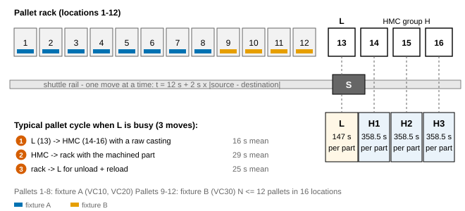
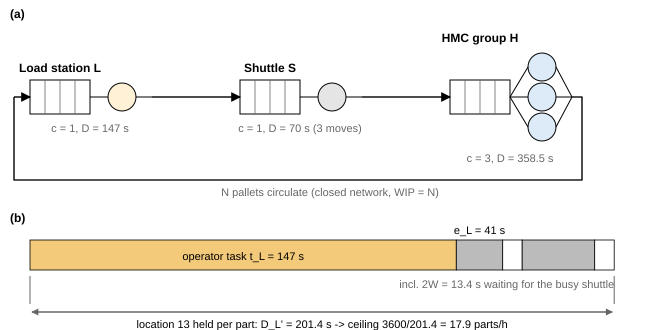
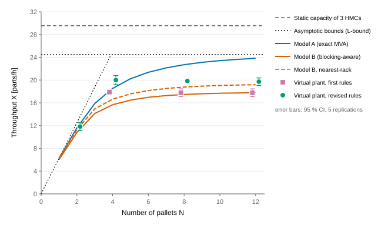
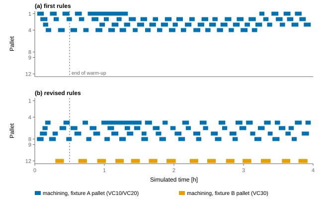
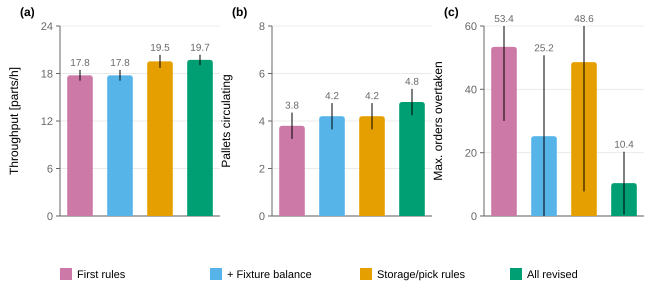
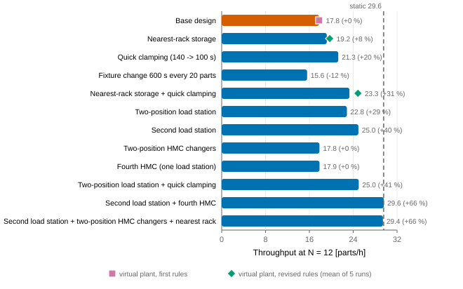
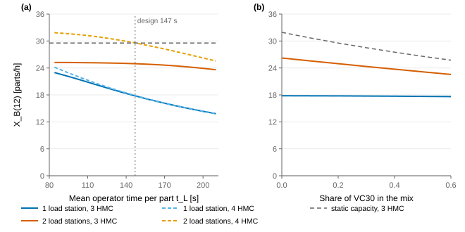

[Author 1 – PhD candidate]¹, [Author 2 – supervisor]¹
¹ [Department, University, City, Country]
Corresponding author: [Author 1 – e-mail] · ORCID: [Author 1 ORCID], [Author 2 ORCID]
Pallet-based flexible manufacturing system (FMS) cells are usually sized with a static capacity calculation of their machines. This paper shows, for a three-machine crankcase cell designed for a compressor factory, why such a calculation overestimates the output and how a design engineer can predict it. The cell is modelled as a closed queueing network of load station, shuttle and machining-centre group, solved by exact multi-server mean value analysis and corrected for the time during which single transfer locations are held by pallet exchanges (blocking-aware model). The models are validated against the real supervisory controller software running on a virtual plant of 21 simulated Modbus controllers, with five replications per configuration (61 runs). With design estimates as inputs, the static model predicts 29.6 parts/h, whereas one operator limits the cell to 24.5 parts/h and the blocking-aware model to 17.8–19.2 parts/h. The controller delivered 17.8 ± 0.7 parts/h with its first dispatching rules and 19.7 ± 0.7 parts/h with revised rules, within −5 % to +1 % of the composite estimate. The first rules froze the set of circulating pallets after start-up (pallet lock-in) and starved one fixture family in three of five replications; a fixture-balance rule removed the starvation, and nearest-rack storage with oldest-first picking raised the throughput by 11 %. A what-if analysis shows that a fourth machine adds nothing, whereas a second load station adds 40 %: load-station capacity should be bought before machine capacity.
Keywords: flexible manufacturing system; closed queueing network; mean value analysis; dispatching rules; virtual commissioning; pallet pool
A flexible manufacturing system (FMS) in the narrow sense is a group of numerically controlled machine tools that share a material-handling system and a pool of fixture pallets and that are coordinated by a supervisory computer [1, 2]. For a machining company that has so far operated stand-alone CNC machines, the first pallet-based cell is a large and nearly irreversible investment. Its business case is normally built on a static capacity calculation: the number of machines, their availability and the mean machining time per part give a monthly output, and the machines are bought to match the demand. Such a calculation sees only the machines. It does not see the load station at which an operator unloads and clamps every part, the shuttle that moves every pallet several times, the fact that the load station and each machine offer only one transfer location, or the limited number of pallets that circulate in the cell. Nor does it see the dispatching rules of the cell controller, which decide which pallet is moved next and which work order receives the next free fixture.
Classical FMS research produced the tools to analyse exactly these effects. Closed queueing networks describe a pallet-limited cell in which the work in process can never exceed the number of pallets [3, 4], and mean value analysis (MVA) solves them with a few lines of arithmetic [5, 6]. Discrete-event simulation became the standard for detailed design because it represents blocking, failures and control rules [7, 8]. Today, virtual commissioning allows the real control software to be tested against a simulated plant before the hardware exists [9, 10]. In industrial practice, and particularly in countries that are at the first stage of FMS adoption, these tools are rarely combined: the cell is sized with a spreadsheet, the controller is bought as a closed package from the machine supplier, and the gap between the planned and the real output is discovered during ramp-up, when it is expensive to correct [11, 12].
This paper addresses the following gap. Analytical FMS models are usually validated against a simulation model that was written for the purpose, with idealised control logic, and studies of dispatching rules in FMS rarely ask how a rule changes the effective number of circulating pallets, which is the input of the queueing model. Conversely, papers on virtual commissioning focus on the logic and the interfaces of the control code and seldom use the virtual plant as a quantitative reference for design models. What is missing is a design method that (i) estimates the capacity of a pallet-based cell with models simple enough for a design engineer, (ii) checks the estimate against the real supervisory controller running against a virtual plant, so that the effect of the dispatching rules is part of the validation, and (iii) turns the results into investment rules. The paper develops and demonstrates such a method on a three-machine crankcase cell designed for a compressor factory. All input data are design estimates and all measurements are taken on a virtual plant; no real-cell data exist yet, and the paper states this wherever a number is given.
The contributions are:
Section 2 reviews the related literature, Section 3 describes the cell, Section 4 develops the models, Section 5 validates them by virtual commissioning, Section 6 studies the dispatching rules, Section 7 evaluates design alternatives, Section 8 discusses generalisation and limitations, and Section 9 concludes.
Stecke [13] structured the decisions of an FMS into design, planning, scheduling and control problems and formulated the planning problems – part-type selection, machine grouping, production ratios, resource allocation of pallets and fixtures, and loading – as nonlinear integer programmes. Browne et al. [1] classified FMS by structure and flexibility type, and Sethi and Sethi [2] showed that flexibility is a set of capabilities whose value depends on the uncertainty a company faces. Reconfigurable manufacturing systems extended the idea to changing the configuration itself [14]. In the cell studied here, machine grouping and loading are solved by design: the three horizontal machining centres (HMCs) are identical and fully tooled, so any machine can process any variant. The remaining design questions are the number of pallets and fixtures per family, the capacity of the load station and the rules of the controller – exactly the questions that a static calculation does not answer.
Solberg's CAN-Q model [3] represented an FMS as a closed network in which a fixed number of pallets circulates between the machine groups, the transport system and the load/unload station. Product-form theory gives throughput and utilisation from the mean service demands only. Reiser and Lavenberg [5] published MVA, which replaces the normalisation constant by a recursion over the population based on the arrival theorem, and Suri and Hildebrant [6] applied MVA to FMS. Multi-server stations require load-dependent MVA or approximations such as the one of Seidmann et al. [15], which replaces a c-server station by a single server with demand D/c and a pure delay. Operational analysis [16] provides distribution-free bounds that identify the bottleneck from D_k/c_k. Buzacott and Shanthikumar [4] give a comprehensive treatment of these models for manufacturing, including blocking and limited buffers, for which exact product-form solutions no longer exist. The pallet-limited cell behaves like a CONWIP system [17]: a new part enters only when a finished part leaves, and Little's law [18] links the number of pallets, the throughput and the pallet cycle time.
Dispatching rules are the industrial standard for real-time decisions in FMS because they are fast, transparent and robust; no rule is best for all objectives [19]. Most studies evaluate rules by tardiness or flow time for a given configuration. Less attention has been paid to how a rule changes the structure of the closed system – for example which pallets and fixture families actually circulate – although this changes the input of the capacity model. Deadlock is the second structural issue in pallet systems: Fanti and Zhou [20] review prevention, avoidance and detection based on digraphs, automata and Petri nets. For a cell with a storage rack, a simple counting condition (Section 8.3) is sufficient to exclude location deadlocks.
Simulation for manufacturing system design is well established [7, 8], and recent work integrates FMS with digital twins, connected machine tools and scheduling [21–23], layout data models [24] or automated material handling [25]. Kritzinger et al. [26] distinguish digital models, shadows and twins by the direction of data flow. Virtual commissioning tests control software against a simulated plant model before installation [9]; it has been used along the life cycle of assembly systems [10] and for brownfield factories with open-source IIoT components [27]. In these works the virtual plant serves mainly to debug logic and interfaces. Here it serves additionally as the quantitative reference for the capacity models, because the measured throughput includes the effect of the real dispatching code, the job handshake and the controller latency.
The case is the crankcase cell of a compressor factory designed in a doctoral project (Fig. 1). Three identical HMCs machine the grey-iron crankcases of three compressor variants (VC10, VC20, VC30) complete in one clamping. A rail-guided shuttle moves one pallet at a time between 16 numbered locations: rack locations 1–12, the load station (location 13) and the transfer locations of the pallet changers of HMC-01 to HMC-03 (locations 14–16). Each pallet changer offers one transfer location to the cell, so a finished pallet must be removed before the next raw pallet can be delivered. One operator at the load station unloads machined parts and clamps raw castings. Twelve fixture pallets exist: pallets 1–8 carry fixture A (VC10 and VC20) and pallets 9–12 fixture B (VC30).

Figure 1. Layout of the crankcase cell: 12 rack locations, the load station (13), the transfer locations of three HMCs (14–16), the shuttle and the typical three-move pallet cycle; fixture families are marked below the rack locations [design estimate].
Table 1 lists the design data. The shuttle move time follows the placeholder rule
for a move from location a to location b. With a uniformly chosen rack location, the mean moves are 16 s from the load station to an HMC, 29 s from an HMC to the rack and 25 s from the rack to the load station [calculated]. When the load station is busy, a finished pallet goes HMC → rack → load station, so a part needs three moves; when it is free, two moves suffice.
Table 1. Design data of the crankcase cell (all values are design estimates or examples of the design; Π = mix share).
| Quantity | VC10 | VC20 | VC30 | Mix-weighted / note |
|---|---|---|---|---|
| Mix share Π | 0.3 | 0.5 | 0.2 | design mix |
| HMC machining time [s] | 270 | 345 | 450 | 343.5 |
| HMC pallet change [s] | 15 | 15 | 15 | 15 |
| Fixture family (pallets) | A (1–8) | A (1–8) | B (9–12) | 8 A + 4 B pallets |
| Operator task [s] | load 90, unload 60, unload + load 140, each × U(0.8, 1.3) | 140 × 1.05 = 147 per part in steady state | ||
| Load-station time in the static design table [s] | 80 | 90 | 100 | 89 (clamping only) |
| HMC MTBF / MTTR | 30 h / 20 min | A = 0.989 | ||
| HMC scrap rate | 0.008 | |||
| Productive hours per month | 330 h (2 shifts × 7.5 h × 22 days) |
The cell is controlled by a supervisory cell controller written in Python with the standard library only. It is the only Modbus TCP client of the cell; the pallet system, the load station and the three HMCs are Modbus TCP servers [28] with a common register map and a toggle-bit job handshake, which is the subject of a companion manuscript of the same doctoral project and is not repeated here. In terms of IEC 62264 [29] the controller works at level 2/3: it decides which pallet moves where and which NC program runs; the PLCs decide how. The controller runs a cyclic loop (20 ms on the virtual plant) that polls the five devices, closes finished jobs in one database transaction each, and, in automatic mode, dispatches new jobs by fixed priorities:
Work orders are sequenced by earliest due date (EDD). The pallet locations are read from the pallet-system PLC, which is the source of truth; the controller database stores only what a PLC cannot know (variant and work order on each pallet, work orders, job history). The same code is used against the real PLCs; only the device table (IP addresses instead of local ports) changes.
The static design model computes the monthly good output of station type m with c_m identical stations as
with mean processing time t̄_m, change time h_m, scrap rate q_m and H productive hours. For the HMC group, A = 30/(30 + 0.333) = 0.989 and C = 3 × 0.989 × 3600 × 330/358.5 × 0.992 = 9 754 parts per month, i.e. 29.6 parts/h [calculated]. With the 89 s of the design table, the same formula gives the load station 40.4 parts/h, so the static model declares the load station uncritical.
In steady state every pallet that returns from an HMC carries one machined part and must leave the load station with a new casting. Each part therefore causes exactly one combined unload-and-load task, not a load task only. With the task-3 time of 140 s and a uniform operator factor U(0.8, 1.3) with mean 1.05, the service demand of the load station per part is
for c_L = 1 operator [calculated]. This bound holds for any number of pallets and any dispatching rule, and it is already 17 % below the static machine capacity. The design-table value of 89 s underestimates D_L by a factor of 1.65 because it counts the clamping of a raw casting but not the unloading and cleaning of the machined part.
The cell is modelled as a closed network with N customers (pallets) and three stations (Fig. 2a): the load station L (c_L = 1, D_L = 147 s), the shuttle S (c_S = 1, D_S = 16 + 29 + 25 = 70 s for three moves) and the HMC group H (c_H = 3, D_H = 343.5 + 15 = 358.5 s). Every pallet visits each station once per cycle. Under product-form assumptions (first-come-first-served, exponential service, unlimited buffers, no blocking) the arrival theorem gives, for a single-server station k and population n,
and, for a station with c_k identical servers, the exact load-dependent form
where p_k(j | n) is the probability of j pallets at station k. Little's law over the whole cycle and per station closes the recursion:
starting from Q_k(0) = 0 and p_k(0 | 0) = 1. The correction term in Eq. (5) removes the free servers that a single-server formula would count as queue; for n ≤ c_k it yields R_k = D_k exactly. The operational bounds [16]
with D = Σ D_k = 575.5 s give the critical number of pallets N* = 575.5/147 = 3.9 [calculated]: below N* the cell is pallet-starved, above it the load station limits.
Model A treats the shuttle moves as work of the shuttle only. In the cell, however, the load station and each pallet changer are single locations. After the operator has finished, the pallet stays on location 13 until the shuttle has taken it away, and the next task cannot start before the shuttle has brought the next pallet (Fig. 2b). The operator waits during both moves and during the time the shuttle is busy with other moves. The same holds for an HMC, which cannot start the next part before its finished pallet has been removed and a raw pallet delivered. Model B adds these exchange times to the service demands of L and H and removes the shuttle as a separate station:
with e_L = 16 + 25 = 41 s (raw pallet out to an HMC, next machined pallet in from the rack) and e_H = 29 + 16 = 45 s (finished pallet out to the rack, raw pallet in from the load station) [calculated]. The waiting time W of a move request for the busy shuttle is approximated by the M/G/1 mean waiting time
with the coefficient of variation c_v ≈ 0.3 of the move times (14–42 s). Because W depends on X and X on D_L' and D_H', the model is solved by a damped fixed-point iteration (start W = 0; solve the two-station MVA of Eqs. (4)–(7); update W; stop when W changes by less than 10^−10 s). At N = 12 it converges to W = 6.7 s, D_L' = 201.4 s and X = 17.8 parts/h [calculated].
Model B double-counts the move from the load station to an HMC, which belongs to both exchanges, and is therefore pessimistic when few pallets circulate; its strength is the ceiling at large N. For design we use the composite estimate
which follows model A while the cell is pallet-starved and the blocking-aware ceiling afterwards.

Figure 2. (a) Closed queueing network of the cell (model A). (b) Time for which the single location of the load station is held per part in model B: operator task, exchange moves and shuttle waiting [calculated].
The reference for the models is not a simulation model written for this paper but the cell controller described in Section 3.3, running unchanged against a virtual plant. The virtual plant consists of 21 simulated PLCs, one per device of the factory, each a real Modbus TCP server with the full register map and the job handshake. The five devices of the cell behave as follows: an HMC job lasts the variant's machining time multiplied by a lognormal factor (σ = 0.04), with operation-dependent failures (MTBF 30 h, exponential repair with mean 20 min) and scrap (0.8 %); a shuttle move lasts t_move of Eq. (1) and changes the location table of the pallet system; an operator task lasts 90 s (load), 60 s (unload) or 140 s (unload and load), each multiplied by U(0.8, 1.3). The plant runs 20 times faster than real time (×20); the controller loop of 20 ms therefore corresponds to 0.4 s of plant time. The virtual HMC does not model the 15 s pallet change separately; the change is part of the shuttle transfer. The tool-management function of the controller was switched off and all tool lives were kept at 100 %, so that tooling does not interfere with the capacity study.
Each replication starts with all pallets empty in the rack, releases 400 single-part work orders in a sequence with the exact mix (blocks of ten orders – three VC10, five VC20, two VC30 – shuffled inside each block with the replication's seed) and EDD due dates in release order, and runs for 4 simulated hours. The first 0.5 h are discarded as warm-up; a pallet cycle lasts 10–15 min, so the cell is in its steady circulation pattern after about three cycles. All key performance indicators are computed from the job table of the controller database over the remaining 3.5 h window: throughput X (completed HMC jobs per hour), busy shares of the HMCs, the operator and the shuttle (job durations including handshake latency), the number of different pallets that carried a part, the variant mix, moves per part, nominal move times by type, the gap between two operator tasks, and an EDD-discipline measure, max. orders overtaken: the largest number of later-due work orders that were started before a given order (orders not started by the end of the run count as started at infinity). Five replications with seeds 101–105 were run per configuration; the tables give means and 95 % confidence half-widths with Student's t (4 degrees of freedom).
Validity criterion. Time compression is only acceptable if the controller and the Modbus communication keep up with the plant. A first batch of runs on a heavily loaded host with the production Modbus time-out of 0.3 s produced false OFFLINE detections – the controller then polls a device only every 5 s wall-clock, i.e. every 100 s of plant time – and throughputs 30–40 % too low. These runs were discarded (they are kept in the data package for transparency). All reported runs use a Modbus client time-out of 2 s in the test harness and are accepted only if no OFFLINE event occurred; all 60 reported ×20 runs satisfy this. A further replication at ×10 checks the remaining effect of time compression (Section 5.3).
Use of generative AI. [Draft – author to adapt to what was actually done.] A large-language-model assistant (Claude, Anthropic) was used to draft analysis and plotting scripts and parts of the manuscript text from the authors' own thesis material, models and control software. The authors specified the experiments, ran all code, checked every number against the data files, verified every reference, and take full responsibility for the content.
Table 2 summarises the analytical results for the design data. Model A rises from 6.3 parts/h with one pallet to 23.8 parts/h with twelve and approaches the load-station bound of 24.5 parts/h; the Seidmann approximation is 1–6 % lower for small N and converges for large N. Already at N = 4 the load station is 76 % utilised in model A while each HMC is only 62 % utilised. Model B saturates at 17.8 parts/h, because the load-station location is held for D_L' = 201.4 s per part; with the nearest-rack storage rule (pallets in locations 10–12, e_L = 32 s) the ceiling rises to 19.2 parts/h [calculated]. Relative to the static capacity of 29.6 parts/h, the blocking-aware ceiling is 40 % lower.
Table 2. Analytical results for the design data: model A (exact MVA), Seidmann approximation, model B (base and nearest-rack storage) and the composite estimate of Eq. (11); U = utilisation, Q_L = mean number of pallets at the load station, cycle = N/X [calculated].
| N | X_A [1/h] | X_Seidmann [1/h] | U_L (A) | U_H (A) | Q_L (A) | X_B [1/h] | W [s] | X_B nearest rack [1/h] | X_est [1/h] | Cycle (A) [min] |
|---|---|---|---|---|---|---|---|---|---|---|
| 1 | 6.26 | 6.26 | 0.26 | 0.21 | 0.26 | 6.02 | 1.7 | 6.24 | 6.26 | 9.6 |
| 2 | 11.58 | 11.14 | 0.47 | 0.38 | 0.59 | 10.78 | 3.4 | 11.28 | 11.58 | 10.4 |
| 3 | 15.87 | 14.80 | 0.65 | 0.53 | 1.03 | 14.14 | 4.8 | 14.94 | 15.87 | 11.3 |
| 4 | 18.53 | 17.45 | 0.76 | 0.62 | 1.54 | 15.66 | 5.6 | 16.64 | 17.78 | 13.0 |
| 6 | 21.36 | 20.69 | 0.87 | 0.71 | 2.70 | 16.97 | 6.3 | 18.15 | 17.78 | 16.9 |
| 8 | 22.70 | 22.32 | 0.93 | 0.75 | 4.03 | 17.46 | 6.5 | 18.76 | 17.78 | 21.1 |
| 12 | 23.82 | 23.69 | 0.97 | 0.79 | 7.07 | 17.78 | 6.7 | 19.18 | 17.78 | 30.2 |
Fig. 3 and Table 3 compare the models with the virtual plant. With the revised dispatching rules of Section 6 (fixture balance, nearest-rack storage, oldest-first pick, longest-waiting machine) the controller delivered 11.8 ± 0.7 parts/h with two pallets and 19.7–20.0 parts/h with four to twelve pallets [measured on the virtual plant]. The throughput does not increase beyond four pallets: the cell reaches its ceiling at N ≈ N* = 3.9, as the bound analysis predicts. With twelve pallets placed, only 4.8 ± 0.6 different pallets carried parts in the measurement window; the remaining pallets stayed empty in the rack because the load station never needed them. Little's law gives a pallet cycle of 4.8/19.7 h = 14.6 min.
Table 3. Throughput measured on the virtual plant (mean ± 95 % CI of five replications, ×20, 3.5 h windows) and model predictions; error = (model − measured)/measured. Revised rules except where stated [measured on the virtual plant; calculated].
| Rules, N placed | X measured [1/h] | Pallets used | U_L | U_H | Model A (N placed) | Model B, nearest rack | Composite, nearest rack | Model B, measured inputs |
|---|---|---|---|---|---|---|---|---|
| revised, 2 | 11.83 ± 0.69 | 2.0 | 0.48 | 0.41 | 11.58 (−2 %) | 11.28 (−5 %) | 11.98 (+1 %) | – |
| revised, 4 | 20.00 ± 0.79 | 4.0 | 0.80 | 0.65 | 18.53 (−7 %) | 16.64 (−17 %) | 19.04 (−5 %) | 19.47 (−3 %) |
| revised, 8 | 19.83 ± 0.32 | 5.2 | 0.81 | 0.66 | 22.70 (+14 %) | 18.76 (−5 %) | 19.18 (−3 %) | 19.29 (−3 %) |
| revised, 12 | 19.71 ± 0.66 | 4.8 | 0.79 | 0.64 | 23.82 (+21 %) | 19.18 (−3 %) | 19.18 (−3 %) | 18.95 (−4 %) |
| first, 4 | 17.89 ± 0.32 | 4.0 | 0.72 | 0.53 | 18.53 (+4 %) | base: 15.66 (−12 %) | base: 17.78 (−1 %) | 16.47 (−8 %) |
| first, 12 | 17.77 ± 0.68 | 3.8 | 0.72 | 0.55 | 23.82 (+34 %) | base: 17.78 (0 %) | base: 17.78 (0 %) | 16.42 (−8 %) |
| revised, 12, ×10 (1 run) | 19.43 | 5.0 | 0.79 | 0.65 | – | – | – | 18.44 (−5 %) |
Four observations follow. First, the static capacity overestimates the cell by a factor of 29.6/19.7 = 1.50 with the revised rules and 29.6/17.8 = 1.67 with the first rules, and model A at the number of pallets placed overestimates it by 14–34 % for N ≥ 8. Second, the composite estimate is within −5 % to +1 % of the measurements with the revised rules, provided that the exchange times correspond to the storage rule that the controller actually uses (nearest rack). Third, the load-station location is saturated whenever N ≥ 4: the measured operator task (146 s) plus the measured gap between two tasks (37 s with the revised rules, 56 s with the first rules) gives 3600/(146 + 37) = 19.7 and 3600/(146 + 56) = 17.8 parts/h, exactly the measured values; the operator is busy only 79 % (72 %) of the time although the station is the bottleneck, because the location waits for the shuttle in the remaining time. Fourth, model B with the measured operator, machining and move times is conservative by 3–8 %: the measured gap (37 s) is only 3 s longer than the measured exchange moves (34 s), whereas Eq. (10) adds 2W ≈ 13 s. The shuttle priorities – a finished machine is emptied directly to a free load station, and the load station is served before the rack is cleared – keep the waiting of the critical exchange well below the M/G/1 value. The exact agreement of the base model B with the first rules (17.78 vs 17.77) is therefore partly a compensation of two errors: the first rules store pallets in the farthest rack locations (measured exchange 50 s instead of 41 s), and Eq. (10) overestimates the waiting.
The time-compression check supports the ×20 protocol: with seed 101, the run at ×10 gave the same throughput as the run at ×20 (19.43 parts/h, 68 vs 68 parts), with a 3 s longer mean operator task (controller and handshake latency) [measured on the virtual plant]. On the real plant, where one loop of 0.25–0.5 s corresponds to 0.25–0.5 s, this latency is negligible.

Figure 3. Throughput versus the number of pallets: static capacity, asymptotic bounds, model A, model B (base and nearest-rack exchange times) and measurements of the real controller on the virtual plant with the first and the revised dispatching rules (mean and 95 % CI of five replications; markers offset horizontally for readability) [calculated; measured on the virtual plant].
The first version of the controller used the same priority structure as the present one but simpler choices inside each priority: a finished pallet was stored in the free rack location with the lowest number (the farthest from the load station), the machined pallet with the lowest location number was brought to the load station first, and an idle machine was fed in the fixed order HMC-01, HMC-02, HMC-03. It had no fixture-balance rule. In the first measurements this controller circulated only three or four of the twelve pallets, and in some runs no VC30 crankcase was machined at all, although 20 % of the work orders were VC30 orders with early due dates [measured on the virtual plant].
The mechanism is a property of the rules, not of the plant. At start-up all pallets are empty, and rule (c) brings empty pallets for the most urgent orders until the first machined pallet returns, after about one HMC cycle plus three moves. From then on rule (c) always prefers a machined pallet over an empty one, and the load-station rule reloads it at once (unload + load) with the most urgent order of the same fixture family. Because the load station is the bottleneck, a machined pallet is practically always waiting in the rack, so empty pallets are never fetched again: the set of circulating pallets, and with it the set of fixture families, is frozen by the first few minutes of operation. Its size is about the number of pallets that the load station can prepare during one pallet cycle, D/D_L' ≈ 575/200 ≈ 3, plus the pallet that is being prepared, i.e. three to four – the measured number. If no fixture-B pallet happens to be in this set, VC30 orders starve indefinitely while their due dates pass – an EDD violation across fixture families that raises no alarm. Fig. 4a shows such a run: pallets 1–4 (fixture A) carry all parts for four hours; the four fixture-B pallets are never used.

Figure 4. Machining intervals per pallet in one replication (seed 101, N = 12, design mix): (a) first rules – pallets 1–4 of fixture A circulate and VC30 is never machined; (b) revised rules – a fixture-B pallet joins the circulation and the parts are spread over more pallets [measured on the virtual plant].
Four rule changes were made, each addressing one symptom (Table 4).
Table 4. Rule sets of the ablation study (switches of the experiment harness; the rest of the controller is identical).
| Rule set | Fixture balance | Rack storage | Pick at load station | Feeding of idle HMCs |
|---|---|---|---|---|
| first | no | lowest free location (farthest) | lowest location number | fixed order 01, 02, 03 |
| + fixture balance (fb) | yes | lowest free location | lowest location number | fixed order |
| storage/pick rules (nro) | no | nearest free location to the load station | oldest machined pallet first | longest-waiting machine |
| revised (all) | yes | nearest free location | oldest machined pallet first | longest-waiting machine |
Fixture balance. Let w* be the most urgent open work order and F its fixture family. If no pallet of family F is in circulation (carrying a part, or standing at the load station or a machine) and an empty F pallet waits in the rack, then (i) the load station only unloads pallets of other families instead of reloading them, (ii) shuttle rule (c) brings the empty F pallet to the load station first, and (iii) rule (d) clears the load station of an empty pallet of another family. The rule acts only in the starving state, so it costs nothing when every family circulates. Nearest-rack storage shortens the exchange moves of the bottleneck station; oldest-first pick gives every machined pallet a bounded waiting time in the rack; longest-waiting machine balances the machine load.
Table 5 and Fig. 5 give the results of the four rule sets with twelve pallets, five replications each, for the design mix and for a fixture-B-heavy mix (0.2/0.4/0.4).
Table 5. Ablation of the dispatching rules, N = 12 (mean ± 95 % CI of five replications; target VC30 share 0.20 for the design mix and 0.40 for the B-heavy mix) [measured on the virtual plant].
| Mix | Rule set | X [1/h] | Pallets used | VC30 share | Max. orders overtaken | Mean nominal move [s] | Load-station gap [s] | U_H (HMC-01/02/03) |
|---|---|---|---|---|---|---|---|---|
| design | first | 17.77 ± 0.68 | 3.8 ± 0.6 | 0.11 ± 0.27 | 53.4 ± 23.4 | 29.7 | 56.2 | 0.76 / 0.72 / 0.16 |
| design | fb | 17.77 ± 0.68 | 4.2 ± 0.6 | 0.22 ± 0.22 | 25.2 ± 25.6 | 29.8 | 55.9 | 0.58 (mean) |
| design | nro | 19.54 ± 0.82 | 4.2 ± 0.6 | 0.13 ± 0.24 | 48.6 ± 40.9 | 20.0 | 38.8 | 0.61 (mean) |
| design | revised | 19.71 ± 0.66 | 4.8 ± 0.6 | 0.25 ± 0.13 | 10.4 ± 9.9 | 18.7 | 36.8 | 0.64 / 0.64 / 0.64 |
| B-heavy | first | 18.06 ± 0.73 | 4.2 ± 0.6 | 0.43 ± 0.35 | 32.8 ± 17.5 | 29.3 | 53.6 | 0.64 (mean) |
| B-heavy | revised | 19.77 ± 0.46 | 5.4 ± 1.9 | 0.44 ± 0.17 | 17.8 ± 15.2 | 17.6 | 35.0 | 0.70 (mean) |
The ablation separates the effects cleanly. Throughput is changed only by the storage and pick rules: nro and the revised set raise X by 10–11 % (17.8 → 19.5–19.7 parts/h), because the mean nominal move falls from 29.7 s to 19–20 s and the load-station gap from 56 s to 37–39 s. Fixture balance alone leaves the throughput unchanged – in two of five seeds it never triggered and the run was identical to the first rules – but it removes the starvation: with the first rules, three of the five design-mix replications machined no VC30 at all (VC30 share 0.11 ± 0.27, up to 69 later orders started before a waiting VC30 order), whereas the revised rules machined VC30 in every replication and reduced the largest overtaking to 10 ± 10 orders. Without fixture balance, the storage/pick rules alone do not prevent lock-in (nro: VC30 share 0.13, overtaking 49). The variance across seeds is itself a finding: with the first rules the product mix of a shift depends on the random order of the first few minutes, which is unacceptable for an assembly line that needs matched sets of parts. With the fixture-B-heavy mix the lock-in is less severe on average (the first pallets loaded more often include a B pallet) but still erratic (VC30 share 0.43 ± 0.35), and the revised rules again raise the throughput by 9 % and halve the overtaking. The longest-waiting-machine rule balanced the HMCs at 64 % each, compared with 76/72/16 % under the fixed order, which does not change the output of a load-station-limited cell but lowers the busy share of the most used machine from 76 % to 64 % and spreads spindle hours, tool wear and maintenance evenly.

Figure 5. Ablation of the dispatching rules at N = 12, design mix: (a) throughput, (b) number of pallets that carried parts, (c) largest number of later-due orders started before a waiting order (EDD discipline); mean and 95 % CI of five replications [measured on the virtual plant].
Because the measurements confirm the composite model within a few per cent once the controller's storage rule is represented, model B was used to evaluate design alternatives (Table 6, Fig. 6). Each case changes only the parameters named; N = 12, design mix.
Table 6. Design alternatives evaluated with model B at N = 4, 8 and 12 pallets; month = X(12) × 330 h; bound = load- station or machine bound of Eq. (8) [calculated; one case also measured on the virtual plant].
| Case | X(4) | X(8) | X(12) [1/h] | Change | Parts/month | U_L' | U_H' | Bound [1/h] |
|---|---|---|---|---|---|---|---|---|
| Base design | 15.7 | 17.5 | 17.8 | – | 5 866 | 0.99 | 0.69 | 24.5 |
| Nearest-rack storage | 16.6 | 18.8 | 19.2 | +8 % | 6 330 | 0.99 | 0.71 | 24.5 |
| Quick clamping (unload + load 140 → 100 s) | 17.9 | 20.5 | 21.3 | +20 % | 7 019 | 0.97 | 0.83 | 30.1 |
| Fixture change of 600 s every 20 parts | 14.2 | 15.4 | 15.6 | −12 % | 5 145 | 1.00 | 0.60 | 20.2 |
| Nearest-rack storage + quick clamping | 19.2 | 22.6 | 23.3 | +31 % | 7 693 | 0.95 | 0.87 | 30.1 |
| Two-position load station | 18.7 | 21.8 | 22.8 | +29 % | 7 540 | 0.93 | 0.90 | 24.5 |
| Second load station (second operator) | 20.6 | 24.2 | 25.0 | +40 % | 8 234 | 0.73 | 0.99 | 30.1 |
| Two-position HMC changers | 16.3 | 17.7 | 17.8 | 0 % | 5 888 | 1.00 | 0.59 | 24.5 |
| Fourth HMC, one load station | 16.2 | 17.8 | 17.9 | 0 % | 5 892 | 1.00 | 0.52 | 24.5 |
| Two-position load station + quick clamping | 21.4 | 24.4 | 25.0 | +41 % | 8 252 | 0.73 | 0.99 | 30.1 |
| Second load station + fourth HMC | 21.8 | 28.1 | 29.6 | +66 % | 9 760 | 0.91 | 0.90 | 40.2 |
| Second load station + two-position HMC changers + nearest rack | 23.5 | 28.3 | 29.4 | +66 % | 9 712 | 0.79 | 0.98 | 30.1 |
One alternative could be checked on the virtual plant without changing the plant model: quick clamping was emulated by scaling the simulated operator times by 100/140. With the revised rules the controller then delivered 24.9 ± 1.3 parts/h (operator task 104 s, HMCs 81 % busy, 6.6 pallets circulating) [measured on the virtual plant], against 23.3 parts/h predicted by model B with nearest-rack storage and quick clamping (−6 %). The direction and the size of the gain (+26 % measured, +21 % predicted relative to the respective base) agree; model B is again conservative.

Figure 6. Design alternatives evaluated with model B at N = 12 (change relative to the base design in brackets) and the corresponding measurements of the real controller on the virtual plant; the dashed line is the static capacity of three HMCs [calculated; measured on the virtual plant].
Three conclusions follow for the case factory. (i) A fourth HMC is worthless while one operator serves one single-location load station: it raises the model output from 17.8 to 17.9 parts/h. The same holds for two-position pallet changers at the HMCs, which hide an exchange that is not on the critical path. (ii) Every measure that raises the effective capacity of the load station pays immediately: quick-clamping fixtures (+20 %), a two-position load station on which the operator works while the shuttle exchanges the other position (+29 %), or a second load station (+40 %). These measures cost a fraction of a machining centre. (iii) The static capacity of the three machines (29.6 parts/h) is reached only when the load-station capacity is roughly doubled and the machine exchange is hidden or a fourth machine is added. In short: in a pallet-based cell with a manned load station, buy load-station capacity before machine capacity, and check D_L'/c_L against D_H'/c_H before every machine purchase. For the case factory this changes the staging of the investment: a second load station or a two-position station with quick-clamping fixtures belongs to the first investment stage, whereas a fourth HMC is only useful after it.
Fig. 7a shows the model-B throughput at N = 12 as a function of the mean operator time per part. With one load station the cell output falls from 23.0 to 13.8 parts/h when the operator time rises from 84 to 210 s, and a fourth HMC adds at most 1.2 parts/h, even with very fast clamping. With two load stations the cell becomes machine-limited: the output is almost insensitive to the operator time (25.2–23.6 parts/h), and a fourth HMC then raises it to 26–32 parts/h. The operator time is therefore the most important uncertain input of the design; it should be measured on a fixture prototype before the cell is ordered. Fig. 7b varies the share of VC30, the variant with the longest machining time. With one load station the output hardly changes (17.8 → 17.6 parts/h for 0 → 60 % VC30), because the machines are not the bottleneck; with two load stations, and in the static model, the output falls by 14–19 %. A load-station-limited cell is thus robust to the product mix in its throughput – but not in its mix fidelity, which depends on the dispatching rules (Section 6) and on the number of pallets per fixture family: the four fixture-B pallets cap the VC30 work in process at four.

Figure 7. Sensitivity of the model-B throughput at N = 12: (a) to the mean operator time per part for one or two load stations and three or four HMCs; (b) to the share of VC30 in the mix (VC10:VC20 kept at 3:5), with the static capacity of three HMCs for comparison [calculated].
The gap between the static capacity of the machines and the output of the cell has three causes, which can be separated with the models of Section 4 and the measurements of Sections 5 and 6. The first is a parametric error: the design table counts the clamping of a casting at the load station but not the unloading of the machined part, so the load-station demand is underestimated by a factor of 1.65 (Eq. 3). The second is a structural error: the static model has no mechanism for the single transfer locations, which are held during the shuttle exchange and turn 147 s of operator work into about 180–200 s of station occupation per part (Eq. 9). The third is a control effect: the dispatching rules decide how many pallets circulate, how long the exchange moves are and whether every fixture family is served (Section 6). The first error can be corrected by better data and will be learned quickly from the first weeks of production; the second and third need a model with the right structure and the real control logic, which is the argument for combining a closed-network model with virtual commissioning.
The method transfers to any pallet-based cell in which all parts pass a common load/unload station and a common transport device, which is the typical structure of machining FMS. The required inputs are few: the operator times per task type, the move-time matrix of the pallet system, the machining times per variant, the mix and the number of pallets per fixture family. The design rules that follow are general: (i) compute the load-station demand per part as unload plus load, never load only; (ii) compare D_k/c_k of all stations, including the load station and the shuttle, before buying machines (Eq. 8); (iii) add the exchange time of single-location stations (Eq. 9) and use the composite estimate (Eq. 11) for the curve X(N); (iv) choose the number of pallets per family from N* and the cost of a fixture, not from the rack size; and (v) verify on a virtual plant that the controller really circulates the intended pallets (Little's law: N_used = X·W).
For a company that introduces its first FMS, the most expensive mistakes are made before the controller exists: the number of machines, the load-station concept and the fixture budget are fixed in the purchase contract. The analysis shows that, in a typical three-machine cell, the decisive bottleneck may be a manned load station costing a small fraction of a machine tool, and that the controller supplied with the cell can lose a further 10 % of output and starve a product family without any alarm. Both findings argue for two practices that need neither commercial simulation software nor a large engineering department: a short MVA calculation during the tender, with the supplier's real operator and move times, and a factory acceptance test of the cell controller against a virtual plant with replicated, time-compressed runs and explicit acceptance criteria (throughput, pallets circulating, mix fidelity, EDD discipline). All tools of this paper run on an offline office PC with the Python standard library, which matters in factories with restricted internet access and small IT budgets.
With R rack locations and N pallets, every pallet outside the rack can always be moved to a free rack location if N ≤ R: if k ≥ 1 pallets are outside the rack, at most N − k ≤ R − 1 pallets are in the rack, so at least one rack location is free. Because the rack can always absorb one more pallet, no circular wait over locations can form, and all shuttle rules of Section 3.3 always find a destination; the cell with N = R = 12 is structurally free of location deadlocks, which is consistent with the absence of any stall in the 61 replications. With N > R a circular wait becomes possible (for example all rack locations and the load station holding raw pallets while the three HMCs finish), and a deadlock-avoidance check in the sense of [20] would be required. Logical deadlocks of the software (a job result lost after a PLC restart) are a separate issue that the controller handles with job time-outs and operator resolution; they did not occur in the reported runs.
The study has clear limitations. (1) All inputs are design estimates of a planned factory, and all measurements are taken on a virtual plant whose process models are themselves simple: operator times are uniform, move times follow a linear placeholder rule, and the pallet change of the HMC is not modelled separately. The virtual plant therefore validates the models against the control logic, not against reality; the real validation will follow the ramp-up of the cell, for which the controller database already records every job. (2) Time compression at ×20 adds controller latency; the ×10 check (one seed) showed no difference in throughput, but a full replication at lower compression was not affordable on the shared host (Section 5.3). (3) Five replications of 3.5 h give confidence half-widths of about ±1 part/h; small differences between rule sets (below about 0.8 parts/h) are not resolved. (4) Model B is an engineering approximation: it double-counts the shared move, uses an open-system waiting formula in a closed system and ignores the priorities of the shuttle rules; it was conservative by 3–8 % against the measurements when the measured inputs were used. (5) Failures were included only as rare events (MTBF 30 h, about 0.4 failures per 4 h run in the whole cell), so the results describe the cell in normal operation; long breakdowns and tool changes would lower all values. (6) The rule study covers one cell; the lock-in mechanism is general, but its size depends on the ratio of load-station to machine capacity and on the number of fixture families.
The static capacity of the machines is a poor guide to the output of a pallet-based FMS cell with a manned single-location load station. For the three-machine crankcase cell studied here, all inputs being design estimates, the following conclusions hold.
Future work will replace the design estimates by data from the factory acceptance tests and the ramp-up of the cell – operator times per task with the real fixtures, the move-time matrix of the pallet system and failure data – and will compare the frozen predictions of this paper with the real output. Extensions of the model to two-position stations with explicit buffers and to several load stations with shared operators are planned.
Funding. [Author to complete: name of the funding organisation in full and grant number – or: "The authors did not receive support from any organization for the submitted work."]
Competing interests. The authors have no relevant financial or non-financial interests to disclose. [Author to confirm; disclose any relation to the case company, its machine suppliers or system integrators.]
Author contributions (CRediT). [Author 1 – PhD candidate]: conceptualization, methodology, software, investigation, formal analysis, data curation, visualization, writing – original draft. [Author 2 – supervisor]: conceptualization, supervision, validation, writing – review and editing. [Authors to confirm or correct.] All authors read and approved the final manuscript.
Data availability. The design data, the raw job tables of all 61 virtual-plant replications, the per-run indicators (runs.csv) and the aggregated results (summary.json) are available [in the repository … with DOI … – author to deposit before submission; until then: from the corresponding author on reasonable request]. No data from real production are used.
Code availability. The analytical models (mva_models.py), the experiment harness (run_vp.py, rules.py, batch.py), the analysis (analyse.py) and the figure scripts are written in Python 3.12 with the standard library only and will be deposited together with the data. The cell controller and the virtual plant are part of the doctoral project's control software and are available from the corresponding author for research purposes [author to decide on licence].
Ethics approval and consent. Not applicable (no human participants, no animals, no personal data).
Use of generative AI. [Draft – author to adapt.] During the preparation of this work the authors used a large-language-model assistant (Claude, Anthropic) to draft scripts and text (see Section 5.1). After using this tool, the authors reviewed and edited the content as needed and take full responsibility for the content of the publication. No generative-AI tool was used to create or alter images; all figures are produced by the authors' plotting script from the data.